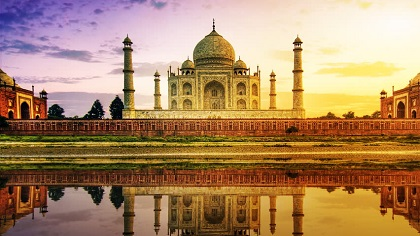
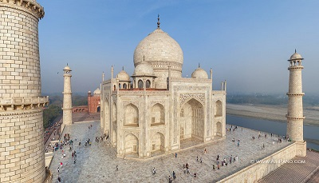
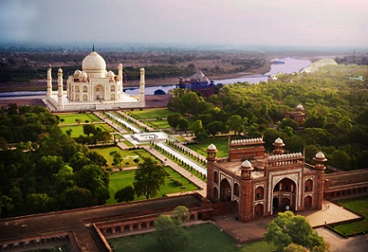

Taj Mahal
Es un monumento funerario construido entre 1631 y 1654 en la ciudad de Agra, estado de Uttar Pradesh (India), a orillas del río Yamuna, por el emperador musulmán Shah Jahan de la dinastía mogol.
El imponente conjunto de edificios se erigió en honor de su esposa favorita, Arjumand Banu Begum, más conocida como Mumtaz Mahal, que murió en el parto de su decimocuarto hijo. Se estima que en su construcción trabajaron unos 20 000 obreros bajo dirección de un conjunto de arquitectos liderados por el arquitecto de la corte, Ustad Ahmad Lahori.
El Taj Mahal es considerado el más bello ejemplo de palacio, estilo que combina elementos de las arquitecturas islámica, persa, india e incluso turca. Este monumento ha logrado especial notoriedad por el carácter romántico de su inspiración.


Reconocimiento
El monumento es un importante destino turístico de la India. En 1983, fue reconocido por la Unesco como Patrimonio de la Humanidad por ser «la joya del arte musulmán en India y una de las obras maestras del patrimonio mundial admiradas universalmente». Descrito por el poeta Rabindranath Tagore como «Una lágrima en la mejilla del tiempo», el Taj Mahal es un símbolo de la rica historia de la India. El mausoleo atrae a entre 7 y 8 millones de visitantes cada año y además en 2007 fue designado una de Las Nuevas Siete Maravillas del Mundo Moderno.
El mausoleo cubierto por la cúpula de mármol blanco es la parte más conocida, el Taj Mahal es un conjunto amurallado de edificios que ocupa 17 hectáreas y que también incluye una gran mezquita, una casa de invitados y jardines.
Proceso Constructivo
La construcción del Taj Mahal se inició con los cimientos del mausoleo. Se excavó y rellenó con escombros una superficie de aproximadamente 12 000 metros cuadrados para reducir las filtraciones del río. Toda el área fue levantada a una altura de casi quince metros sobre el nivel de la ribera. El Taj Mahal tiene una altura aproximada de sesenta metros, y la cúpula principal mide veinte metros de diámetro y 25 de altura.
En la zona del mausoleo se cavaron pozos hasta encontrar la napa de agua, y se los llenó con piedra y escombros formando las bases de los cimientos. Se dejó un pozo abierto en las cercanías para monitorear el cambio del nivel freático. En lugar de utilizar andamiajes de bambú como era común en la época, los obreros construyeron colosales andamios de ladrillo por fuera y por dentro de los muros del mausoleo. Estos andamios eran tan enormes que los capataces estimaron que llevaría años desmantelarlos.
